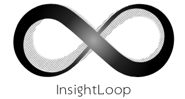

InsightLoop
InsightLoop ist eine KI-gestützte Webanwendung zur Analyse von
Kundenkommunikation im E-Commerce.
Die Anwendung klassifiziert Support-Nachrichten automatisch
und generiert umsetzbare Insights zur Verbesserung von
Geschäftsprozessen.
Ruby on Rails
PostgreSQL
OpenAI API
RAG
HTML
CSS
Alexandre Psicanalista
Professionelle Website für einen Psychoanalytiker mit Fokus
auf klare Informationspräsentation und Terminvereinbarung.
Die Website bietet eine übersichtliche Darstellung der
Dienstleistungen, Qualifikationen und Kontaktmöglichkeiten
mit responsivem Design.
HTML
CSS
JavaScript
Responsive Design

Anna Bella
Mein erstes Website-Projekt zu Beginn meiner Webentwicklungs-Reise.
Eine persönliche Blog-Website mit biografischen Informationen.
Das Projekt demonstriert grundlegende HTML- und CSS-Kenntnisse
mit Fokus auf saubere Struktur und einfaches, klassisches Design.
HTML
CSS